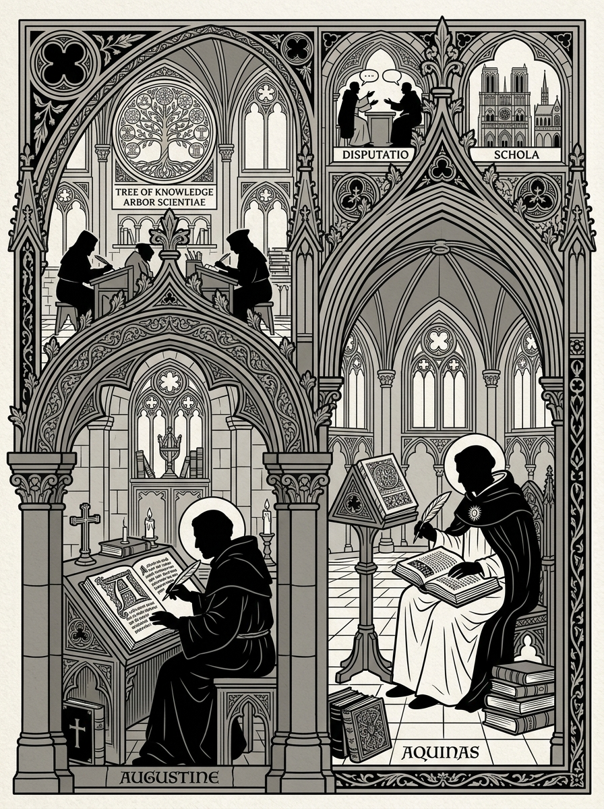

🔍 ZoomWichtige Denker
- Augustinus: Verbindung von platonischen Motiven mit christlicher Theologie.
- Thomas von Aquin: Systematische Synthese von Vernunft und Offenbarung.
- Aquin: (falls gewünscht) Weitere mittelalterliche Denker.
- Boethius: Frühe christliche Logik.
- Avicenna: Islamische Philosophie, Erhaltung des antiken Erbes.
- Averroes: Kommentar zu Aristoteles, Einfluss auf Scholastik.
- Meister Eckhart: Mystik und innere Erfahrung.
Kerngedanken
Das Mittelalter verbindet Theologie und Philosophie. Die Suche nach einem harmonischen Verhältnis zwischen göttlicher Offenbarung und rationaler Erkenntnis prägt die Epoche.